In part 1 we discussed the build process and the zImage generation. Also explained the flow of compressed head.S till it relocates itself and again setup the stack, heap and cache using cache_on().
In this part 2, we will see how mmu is setup. As this is the important part of the kernel boot process, and also explains how page table works, I will capture details about how page table works and cover arm32 MMU concepts using the qemu based booting process and from the arm developer manual to get the insights of how translation table works.
2. Linux Page Table Abbreviations
| Abbreviation | Full Form | Description | ARM32 Usage |
|---|---|---|---|
pgd / pgd_t / pgdval_t |
Page Global Directory |
Top-level page table in Linux. Kernel’s main PGD is |
Yes |
p4d / p4d_t / p4dval_t |
Page Level 4 Directory |
Added for 5-level paging after |
No |
pud / pud_t / pudval_t |
Page Upper Directory |
Introduced for 4-level paging abstraction. |
No |
pmd / pmd_t / pmdval_t |
Page Middle Directory |
Intermediate level between PGD and PTE. |
Yes |
pte / pte_t / pteval_t |
Page Table Entry |
Final level entry mapping to physical pages. |
Yes |
pfn |
Page Frame Number |
Unique number identifying a physical page (e.g., address |
Yes |
3. ARM32 MMU concepts
-
the ARM32 architecture with a classic MMU has 2 levels of page tables and the more recent LPAE (Large Physical Address Extension) MMU has 3 levels of page tables.
-
On some ARMv7 architectue have LPAE MMU but only conditionally enabled.By default it is disabled and classic 2 level MMU is used.
But let’s first discuss how Linux see the world of paging.

-
Each of the entities PGD, P4D … etc are arrays of pointers. The PTE despite having a singular form also contain several pointers.
-
in this document we will only capture ARM32 which has 2 or 3 levels of page tables but still good to know about the 4 levels of page tables.
3.1. classic ARM32 paging setup
-
Linux folds P4D and PUD, providing 2048 pointers per PGD, 1 pointer per PMD and 512 pointers per PTE.
Level 1: Page Global Directory (PGD) - 2048 entries (2^11)
Level 2: Page Middle Directory (PMD) - 2048 entries (2^11)
# PGD and PMD are one to one mapped in case of classic ARM32 paging setup makeing it behave like 2 level paging setup.
# This is not true for LPAE paging setup.
Level 3: Page Table Entry (PTE) - 512 entries (2^9)Now , how much memory does each level cover?
# Total memory covered
# PGD(1) * PMD(2048) * PTE(512) * Page Size(4KB) = 4GB
2048 entries * 512 entries * 4KB = 4GB
# PGD: 11 bits PMD: 11 bits PTE: 9 bits Offset: 12 bits|
The classic ARM32 paging setup in Linux folds P4D and PUD, providing 2048 pointers per PGD, 1 pointer per PMD and 512 pointers per PTE. It uses 3 levels of the hierarchy while ARM32 hardware only has two. |

3.2. LPAE (Large Physical Address Extension) paging setup
Each PGD has 4 pointers covering 1GB each (for a total of 4GB of memory) and 512 pointers per PMD dividing each 1GB into 2MB chunks, then 512 pointers per PTE dividing the 2MB chunks into 4KB chunks (pages).
# Total memory covered
# PGD(4) * PMD(512) * PTE(512) * Page Size(4KB) = 4GB
4 * 512 * 512 * 4KB = 4GB
# PGD: 2 bits | PMD: 9 bits | PTE: 9 bits | Offset: 12 bits
Reference from the kernel code: https://github.com/torvalds/linux/blob/cbfffcca2bf0622b601b7eaf477aa29035169184/include/linux/pgtable.h#L125
static inline pmd_t *pmd_off(struct mm_struct *mm, unsigned long va)
{
return pmd_offset(pud_offset(p4d_offset(pgd_offset(mm, va), va), va), va);
}3.3. Translation table
The virtual address for the kernespace global page directory is PAGE_OFFSET+0x4000. On ARM32 this base address, in physical memory, is set in TTBR0 (Translation Table Base Register). Linux uses the symbol swapper_pg_dir for this address.
The translation table must begin on a 16K boundary. When a virtual address needs to be translated, the top 12 bits of that address select the first level entry in the translation table. Hence each first level entry deals with 1M of the virtual address space. Each entry is 32 bits in size. There are 4 types of table entries as indicated by the low 2 bits of the entry:
00 - unmapped (access will give a translation fault). 01 - coarse 2nd level table 10 - section descriptor 11 - fine 2nd level table
|
head.s uses 10 - section descriptor for mapping the memory. |
4. ARM32 boot context
Physical to virtual address mapping as per the head.S file

The diagram shows the complete identity mapping (VA = PA) that __setup_mmu builds across both address spaces side by side. A few things to note:
-
The solid teal arrows through the RAM window are the active, cacheable mappings — every 1 MB section in that region gets a …c0e descriptor and is fully accessible by the decompressor once the MMU turns on.
-
The dashed arrows on the gray and amber regions carry the same VA = PA identity but with strongly-ordered attributes (…c12) — the CPU can still address them, but no cache fill happens and no speculative execution is permitted (XN=1).
-
The two amber strips at 0x40200000 and 0x50200000 are the rounding artefacts: sections where the 1 MB-aligned descriptor value falls just across the r9/r10 threshold when the full 32-bit value is compared, creating a one-section slip at each boundary. The lower one is physically DRAM mapped non-cached; the upper one is mapped cached ~1 MB past the true RAM end. Both are harmless for the decompressor’s purposes.
4.1. Where execution begins
After the compressed kernel is decompressed, control passes to the physical address of stext in arch/arm/kernel/head.S. At this point the CPU is running entirely in physical memory — MMU off, caches off, no page tables.
The very first task is to build a minimal translation table, load it into the MMU hardware registers, then switch the program counter from a physical address to a virtual address. Everything described in this document happens in that window.
4.2. Virtual memory split
The kernel is compiled to execute in a configurable virtual address range
controlled by PAGE_OFFSET:
| Kconfig symbol | PAGE_OFFSET |
Kernel virtual range |
|---|---|---|
|
|
|
|
|
|
|
|
|
(default) |
|
|
The most common split is 0xC0000000: 1 GB of kernel virtual space, 3 GB for
userspace. The kernel is compiled to execute at
KERNEL_RAM_VADDR = PAGE_OFFSET + TEXT_OFFSET (typically 0xC0008000).
4.3. swapper_pg_dir — the initial page table
The initial page table lives at KERNEL_RAM_VADDR - PG_DIR_SIZE. For classic
ARM MMU this is 0xC0008000 - 0x4000 = 0xC0004000 in virtual memory. At the
corresponding physical offset (e.g. 0x40204000 in this debug session) this
16 KB region holds 4096 first-level section descriptors covering the entire
4 GB address space.
|
|
5. __setup_mmu
This is called before the decompressor starts executing in virtual memory. cache_on() is called from head.S to enable the cache so that can speed up the execution of the decompressor.
# cache_on -> call_cache_fn -> __armv7_mmu_cache_on -> __setup_mmu
cache_on () at /usr/src/kernel/arch/arm/boot/compressed/head.S:722
722 in /usr/src/kernel/arch/arm/boot/compressed/head.S
1: x/10i $pc
=> 0x41c7c000 <cache_on>: mov r3, #8
0x41c7c004 <cache_on+4>: b 0x41c7c24c <call_cache_fn>
# proc_types is called from head.S to detect the CPU type and call cache_on
proc_types () at /usr/src/kernel/arch/arm/boot/compressed/head.S:1121
1121 in /usr/src/kernel/arch/arm/boot/compressed/head.S
1: x/10i $pc
=> 0x41c7c3cc <proc_types+348>: b 0x41c7c158 <__armv7_mmu_cache_on>
0x41c7c3d0 <proc_types+352>: b 0x41c7c45c <__armv7_mmu_cache_off>
0x41c7c3d4 <proc_types+356>: b 0x41c7c504 <__armv7_mmu_cache_flush>
872 in /usr/src/kernel/arch/arm/boot/compressed/head.S
1: x/10i $pc
=> 0x41c7c178 <__armv7_mmu_cache_on+32>: tst r11, #15
0x41c7c17c <__armv7_mmu_cache_on+36>: movne r6, #14
0x41c7c180 <__armv7_mmu_cache_on+40>: blne 0x41c7c09c <__setup_mmu>armv7_mmu_cache_on detects whether the CPU implements VMSA (the standard
paged MMU), sets up the RAM attribute register r6, then branches to
setup_mmu:
r6 is the key hand-off value. CB_BITS evaluates to 0x0C (C=1, B=1),
so r6 = 0x0E — exactly the …c0e suffix seen in the GDB dumps for RAM
entries.
6. ARM32 first-level descriptor format
Each 32-bit entry in the first-level translation table is one of four types,selected by bits [1:0]:
bits[1:0] |
Type | Meaning |
|---|---|---|
|
Fault / invalid |
Access generates a Translation fault. Bits |
|
Page table |
Points to a 1 KB second-level table for 4 KB / 64 KB page mapping. |
|
Section / Supersection |
Direct 1 MB (Section) or 16 MB (Supersection) flat mapping.
Bit |
|
Reserved |
Always generates a Translation fault in VMSAv7. |
6.1. Section descriptor bit layout

| Field | Purpose |
|---|---|
|
Physical base address of the mapped 1 MB section. |
|
Non-secure bit (Security Extensions only). |
|
Not-global — TLB entry tagged with ASID; only valid for current process. |
|
Shareable — region is shared between multiple processors. |
|
Access Permissions. Deprecated encoding |
|
Type Extension — combined with C and B to encode the full memory type. |
|
Execute-Never. Set = no instruction fetch permitted from this region. |
|
Cacheable. |
|
Bufferable. |
|
|
7. Phase-by-phase analysis
7.1. Phase 1 — Locate the page-table base
sub r3, r4, #16384 @ r4 = end of compressed-image allocation
bic r3, r3, #0xff @ \
bic r3, r3, #0x3f00 @ } clear low 14 bits → align to 16 KBThe ARM MMU requires the first-level table to be aligned to a 16 KB boundary.
Subtracting 16384 from r4 and masking the low 14 bits produces a valid,
aligned base address for the 4096 × 4-byte = 16 KB table.
(gdb) info registers r3 r4
r3 = 0x40204000 @ page-table base (aligned to 16 KB)
r4 = 0x40208000 @ end of allocation7.2. Phase 2 — Compute the RAM window
mov r0, r3 @ r0 = write pointer
mov r9, r0, lsr #18 @ \
mov r9, r9, lsl #18 @ } mask off low 18 bits → 256 MB-aligned base
add r10, r9, #0x10000000 @ r10 = r9 + 256 MBShifting right then left by 18 is a bitwise AND with ~0x3FFFF, which rounds
the page-table base address down to the nearest 256 MB boundary. Because the
kernel is loaded at a 16 MB-aligned physical address, this reliably captures
the start of the DRAM bank.
(gdb) info registers r9 r10
r9 = 0x40204000 @ RAM window start
r10 = 0x50204000 @ RAM window end (r9 + 256 MB)|
The 256 MB window is a conservative estimate, not the true DRAM size.
Its only purpose is to give the decompressor a workable cached region.
The real memory map is built later by |
7.3. Phase 3 — Initialise the descriptor template
mov r1, #0x12 @ 0b0001_0010: [1:0]=10 Section, bit[4]=1 XN
orr r1, r1, #3 << 10 @ AP[11:10] = 0b11 (full access, deprecated encoding)
add r2, r3, #16384 @ r2 = loop sentinel (one-past-end of table)r1 starts as 0x00000c12. Because bits [31:20] encode the physical base
address of a section descriptor, adding 0x100000 (1 MB) each iteration
simultaneously advances both the PA in the descriptor and the value being
compared against r9/r10.
(gdb) info registers r1 r2 r0
r1 = 0x00000c12 @ initial descriptor template
r2 = 0x40208000 @ loop sentinel
r0 = 0x40204000 @ write pointer (= r3)7.4. Phase 4 — Main mapping loop
1: cmp r1, r9 @ C=0 if r1 < r9
cmphs r10, r1 @ C=0 if r10 <= r1 (only tested when C was set)
bic r1, r1, #0x1c @ clear XN | C | B
orrlo r1, r1, #0x10 @ non-RAM: set XN, leave C/B = 0
orrhs r1, r1, r6 @ RAM: OR in r6 (0x0e: C=1, B=1, XN=0)
str r1, [r0], #4 @ write descriptor, post-increment r0
add r1, r1, #1048576
teq r0, r2
bne 1b7.4.1. The dual-purpose r1 idiom
r1 is simultaneously the section descriptor being written and the probe value
tested against the RAM window. This works because bits [31:20] carry the
PA base in both contexts — incrementing by 0x100000 is valid for both.
7.4.2. Condition-code logic
cmp r1, r9 → if r1 < r9: C=0 (LO — below window)
cmphs r10, r1 → only runs if C=1
→ if r10 <= r1: C=0 (LO — above window)
Final conditions:
LO → r1 < r9 OR r1 >= r10 → outside [r9, r10) → non-RAM
HS → r9 <= r1 < r10 → inside [r9, r10) → RAM|
The comparison uses the full 32-bit r1 including the low |
7.5. Phase 5 — Flash / execution-context fixup (epilogue)
orr r1, r6, #0x04 @ r6 = 0x0e, force B bit → r1 = 0x0e | 0x04 = 0x0e
orr r1, r1, #3 << 10 @ AP=11
mov r2, pc @ current PC
mov r2, r2, lsr #20 @ 1 MB section index
orr r1, r1, r2, lsl #20 @ descriptor = RAM attrs + section base
add r0, r3, r2, lsl #2 @ table slot = base + index * 4
str r1, [r0], #4 @ patch section containing PC
add r1, r1, #1048576
str r1, [r0] @ patch next 1 MB section
mov pc, lrThis epilogue overwrites the two table entries that cover the currently
executing code with full RAM attributes. It is necessary when the decompressor
is running from NOR Flash (outside the [r9, r10) window) — without this
patch those entries would carry …c12 (non-cached, non-executable) and the
CPU could not execute from them after the MMU is enabled.
8. Register summary on entry/exit
| Register | Direction | Example value | Purpose |
|---|---|---|---|
|
in |
|
End of page-table allocation |
|
in |
|
RAM section attributes from |
|
in |
(caller’s LR) |
Return address (written to |
|
internal |
|
Aligned page-table base |
|
internal |
|
RAM window start |
|
internal |
|
RAM window end (r9 + 256 MB) |
|
internal |
|
Write pointer through table |
|
internal |
|
Running descriptor (PA base + attributes) |
|
internal |
|
Loop sentinel / PC section index (epilogue) |
9. GDB trace — observed page-table dumps
-
0x40204000 is the page table base address.
-
0x40208000 is the end of the page table allocation
9.1. Early non-RAM region (0x40204000)
(gdb) x/20xw 0x40204000
0x40204000: 0x00000c12 0x00100c12 0x00200c12 0x00300c12
0x40204010: 0x00400c12 0x00500c12 0x00600c12 0x00700c12
0x40204020: 0x00800c12 0x00900c12 0x00a00c12 0x00b00c12Every entry ends in …c12: XN=1, C=0, B=0 — strongly ordered. PA base
increases by 0x00100000 per slot, confirming identity mapping (VA = PA)
across the entire address space.
9.2. Lower RAM boundary (0x40205000)
Table address 0x40205000 is entry (0x40205000 - 0x40204000) / 4 = 0x400,
describing VA/PA 0x40000000 onwards.
(gdb) x/20xw 0x40205000
0x40205000: 0x40000c12 0x40100c12 0x40200c0e 0x40300c0e
0x40205010: 0x40400c0e 0x40500c0e 0x40600c0e 0x40700c0e
0x40205020: 0x40800c0e 0x40900c0e 0x40a00c0e 0x40b00c0e
0x40205030: 0x40c00c0e 0x40d00c0e 0x40e00c0e 0x40f00c0e
0x40205040: 0x41000c0e 0x41100c0e 0x41200c0e 0x41300c0e| Entry | Descriptor | PA | Suffix | Attributes |
|---|---|---|---|---|
0x400 |
|
|
|
Non-RAM: XN=1, C=0, B=0 |
0x401 |
|
|
|
Non-RAM: XN=1, C=0, B=0 |
0x402 |
|
|
|
RAM: XN=0, C=1, B=1 (first cached entry) |
0x403+ |
|
|
|
RAM continues |
9.2.1. Why the transition falls at 0x40200000, not r9 = 0x40204000
The full-width comparison includes the 0xc12 attribute bits:
r1 = 0x40200c12 → 0x40200c12 < 0x40204000 → LO → non-RAM → ...c12
r1 = 0x40300c12 → 0x40300c12 > 0x40204000 → HS → RAM → ...c0eThe 0x40200000 section is physically DRAM but its descriptor value falls
below r9, so the loop marks it non-cached. The epilogue’s flash-fixup
subsequently patches it to c0e if the decompressor happens to be executing
from that region — which explains why the GDB dump already shows c0e at
entry 0x402 even though the loop would have written c12.
9.3. Upper RAM boundary (0x40205400)
Table address 0x40205400 is entry 0x500, describing VA/PA 0x50000000
onwards.
(gdb) x/20xw 0x40205400
0x40205400: 0x50000c0e 0x50100c0e 0x50200c12 0x50300c12
0x40205410: 0x50400c12 0x50500c12 0x50600c12 0x50700c12
0x40205420: 0x50800c12 0x50900c12 0x50a00c12 0x50b00c12
0x40205430: 0x50c00c12 0x50d00c12 0x50e00c12 0x50f00c12
0x40205440: 0x51000c12 0x51100c12 0x51200c12 0x51300c12| Entry | Descriptor | PA | Suffix | Attributes |
|---|---|---|---|---|
0x500 |
|
|
|
RAM: XN=0, C=1, B=1 |
0x501 |
|
|
|
RAM: XN=0, C=1, B=1 (last cached entry) |
0x502 |
|
|
|
Non-RAM: XN=1, C=0, B=0 (first uncached entry) |
0x503+ |
|
|
|
Non-RAM to |
9.3.1. Why the transition falls at 0x50200000, not r10 = 0x50204000
r1 = 0x50200c0e
cmphs r10, r1 → 0x50204000 > 0x50200c0e → HS → still RAM → ...c0e
r1 = 0x50300c12 (after bic clears old attrs)
cmphs r10, r1 → 0x50204000 < 0x50300c12 → LO → non-RAM → ...c12The 0x50200000 section passes the HS test even though r10 = 0x50204000 is
only 16 KB into it. The remaining ~1020 KB (0x50204000–0x502FFFFF)
receives cached attributes it does not strictly need. This is harmless —
those addresses are never accessed during early boot.
9.4. Rounding-artefact summary
| PA section | Loop result | Suffix | Note |
|---|---|---|---|
|
Non-RAM |
|
Below r9 |
|
Non-RAM |
|
Descriptor < r9 — physically DRAM, mapped uncached by loop |
|
RAM |
|
Core cached window (~254 MB) |
|
RAM |
|
Descriptor < r10 — over-mapped cached by ~1 MB |
|
Non-RAM |
|
Above r10 |
11. MMU enablement — steps after __setup_mmu returns
setup_mmu returns to armv7_mmu_cache_on, which then executes a
carefully ordered coprocessor sequence to activate the MMU.
11.1. Full sequence
mov r0, #0
mcr p15, 0, r0, c7, c10, 4 @ DSB — drain write buffer
tst r11, #0xf @ VMSA capable?
mcrne p15, 0, r0, c8, c7, 0 @ flush I+D TLBs
mrc p15, 0, r0, c1, c0, 0 @ read SCTLR
bic r0, r0, #1 << 28 @ clear TRE (direct TEX model)
orr r0, r0, #0x5000 @ I-cache (bit 12) + RR replace (bit 14)
orr r0, r0, #0x003c @ write buffer (bits 2–5)
bic r0, r0, #2 @ clear A (no unaligned fault)
orr r0, r0, #1 << 22 @ set U (ARMv6 unaligned model)
#ifdef CONFIG_MMU
ARM_BE8(orr r0, r0, #1 << 25) @ big-endian page tables (BE8 build only)
mrcne p15, 0, r6, c2, c0, 2 @ save current TTBCR
orrne r0, r0, #1 @ stage MMU enable: SCTLR bit 0 = 1
movne r1, #0xfffffffd @ domain 0 = client
bic r6, r6, #1 << 31 @ 32-bit translation (not LPAE)
bic r6, r6, #(7<<0)|(1<<4) @ N=0, PD0=0 → all VAs use TTBR0
mcrne p15, 0, r3, c2, c0, 0 @ TTBR0 = page-table base (r3)
mcrne p15, 0, r1, c3, c0, 0 @ DACR = domain 0 client
mcrne p15, 0, r6, c2, c0, 2 @ TTBCR = 32-bit, TTBR0 only
#endif
mcr p15, 0, r0, c7, c5, 4 @ ISB — flush pipeline
mcr p15, 0, r0, c1, c0, 0 @ write SCTLR — MMU NOW ON
mrc p15, 0, r0, c1, c0, 0 @ read back (force write completion)
mov r0, #0
mcr p15, 0, r0, c7, c5, 4 @ ISB — next fetch goes through MMU
mov pc, r12 @ return11.2. Step-by-step breakdown
11.2.1. Step 1 — Drain the write buffer (DSB)
mov r0, #0
mcr p15, 0, r0, c7, c10, 4 @ Data Synchronisation BarrierAll buffered writes to the page table must reach physical memory before any MMU register is loaded. Without the DSB a pending store to a descriptor could arrive after the MMU has already fetched that entry, causing a translation from stale data.
c7, c10, 4 is the CP15 DSB encoding for ARMv6/v7. It stalls the pipeline
until the write buffer is empty and all cache-line evictions are complete.
11.2.2. Step 2 — Flush the TLBs
tst r11, #0xf @ r11[3:0] non-zero → VMSA MMU present
mcrne p15, 0, r0, c8, c7, 0 @ invalidate I+D TLBsStale VA→PA translations from an earlier boot stage would produce wrong
results the instant the new page table is active. c8, c7, 0 invalidates
both instruction and data TLBs.
11.2.3. Step 3 — Configure SCTLR
Read-modify-write on the System Control Register:
Register description: https://developer.arm.com/documentation/ddi0601/2025-12/AArch32-Registers/SCTLR--System-Control-Register(gdb) info registers SCTLR
SCTLR 0xc50078 12910712
(gdb)Bit Name Value Meaning
---- ------ ------ -------------------------------
0 M 0 MMU disabled ❌
1 A 0 Alignment check disabled
2 C 0 Data cache disabled ❌
3 W 1 Write buffer enabled
11 Z 0 Branch prediction disabled
12 I 1 Instruction cache enabled ✅
13 V 0 Normal exception vectors (low)
22 U 1 Unaligned access enabled11.2.4. Step 4 — Load the MMU hardware registers
-
Set TTBR0, DACR, TTBCR registers: Refer arm manula for bit level details.
=> 0x41c7c1c0 <__armv7_mmu_cache_on+104>: mcrne 15, 0, r3, cr2, cr0, {0} @ TTBR0 = page-table base (r3)
0x41c7c1c4 <__armv7_mmu_cache_on+108>: mcrne 15, 0, r1, cr3, cr0, {0} @ DACR = domain 0 = Client
0x41c7c1c8 <__armv7_mmu_cache_on+112>: mcrne 15, 0, r6, cr2, cr0, {2} @ TTBCR-
GDB dump of the registers to get more details.
(gdb) info registers TTBR0 DACR TTBCR SCTLR
TTBR0 0x40204000 1075855360
DACR 0xfffffffd -3
TTBCR 0x0 0
SCTLR 0xc5507d 12931197
(gdb)
-----
Explanation of the registers
SCTLR = 0xC5507D (Key Register)
Important bits:
Bit Name Value Meaning
---- ----- ------ ------------------------------
0 M 1 MMU enabled ✅
2 C 1 Data cache enabled ✅
12 I 1 Instruction cache enabled ✅
11 Z 0/1 Branch prediction (likely ON)
1 A 0 Alignment check OFF
22 U 1 Unaligned access allowed
✅ Interpretation
MMU: ON
I-Cache: ON
D-Cache: ON-
This confirms: You are after MMU + cache enable, likely inside kernel execution.
# TTBR0 = 0x40204000
This is the base address of your Level-1 page table (PGD)
TTBR0 → 0x40204000 → PGD baseSo your page tables live in physical memory around:0x40204000
# TTBCR = 0x0
TTBCR = 0 → Full address space uses TTBR0Meaning: No split between TTBR0 / TTBR1. Entire VA space uses single translation table 👉 Typical for: Early Linux boot, Simpler ARM32 setups
# DACR = 0xFFFFFFFD
Domain Access Control Register:
0xFFFFFFFD = 11111111 11111111 11111111 11111101
Each domain = 2 bits
Most domains → 11 = Manager mode (no permission checks)
Domain 0 → 01 = Client mode (uses page permissions)Meaning: Kernel allows access freely (manager domains). Still respects permissions for domain 0. This is very typical Linux setup
TTBR0 must be written before bit 0 of SCTLR is set. If the MMU turned
on before the page-table pointer was valid, the first TLB miss would attempt
a walk from an uninitialised address.
11.2.5. Step 5 — ISB + commit SCTLR + return
mcr p15, 0, r0, c7, c5, 4 @ ISB — discard speculative fetches
mcr p15, 0, r0, c1, c0, 0 @ write SCTLR with bit 0 set — MMU ON
mrc p15, 0, r0, c1, c0, 0 @ read back (forces write to complete)
mov r0, #0
mcr p15, 0, r0, c7, c5, 4 @ ISB — guarantee next fetch uses MMU
mov pc, r12 @ return (first instruction translated by MMU)(gdb) info registers r0 r1 TTBCR SCTLR TTBR0 TTBR1 TTBR0_EL1 TTBR1_EL1 r6
r0 0x0 0
r1 0xfffffffd -3
TTBCR 0x0 0
SCTLR 0xc5507d 12931197
TTBR0 0x40204000 1075855360
TTBR1 0x0 0
TTBR0_EL1 0x40204000 1075855360
TTBR1_EL1 0x0 0
r6 0x0 0
(gdb)The first ISB flushes any instructions already in the fetch/decode stages that were brought in before the SCTLR write.
Writing SCTLR with bit 0 set is the single instruction that activates the MMU. The immediate read-back is a standard ARMv7 idiom to prevent the store from being merged or reordered across the subsequent ISB.
The second ISB guarantees that mov pc, r12 — and every instruction after it
— is fetched through the now-active translation table.
12. End result
After mov pc, r12 returns, the CPU state is:
-
MMU active — every instruction fetch and data access translated via the table at physical address
r3(0x40204000in this session). -
Identity mapping in force — VA = PA everywhere, so the program counter value does not change meaning as the MMU enables.
-
Instruction cache active — fetches from the RAM window are cached.
-
Write buffer active — stores to RAM are buffered and reordered.
-
Unaligned accesses transparently handled — ARMv6 model.
-
TEX remap disabled — descriptors use direct C/B/TEX encoding.
The decompressor now executes from cached memory and can decompress the kernel
at full speed. Once decompression completes, __create_page_tables in
arch/arm/kernel/head.S rebuilds this table with accurate RAM extents and
eventually replaces it entirely with swapper_pg_dir before branching to
start_kernel().